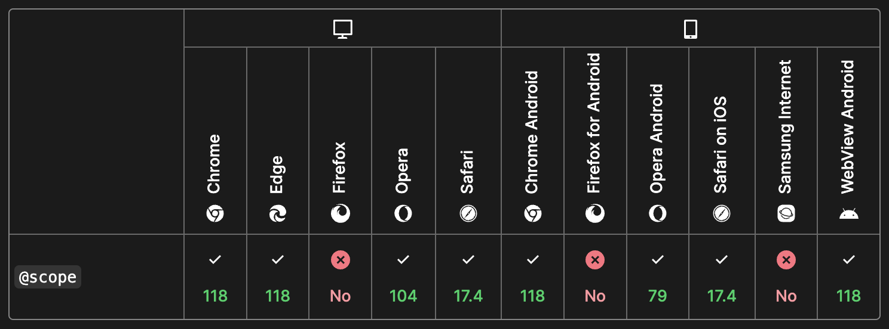

Bleeding Edge Web
@edgeATX
edgeATX.org
March 2024
News From the Bleeding Edge
— Brian Moeskau (@bmoeskau)
HTML with Superpowers
— Dave Rupert (@davatron5000@mastodon.social)
Housekeeping
- Join us on Slack
- Speakers and sponsors always wanted
Thanks to Our Host!
Thanks to Our Sponsor!

Libraries & Frameworks
Bun 1.1
Released April 1
An all-in-one JavaScript runtime & toolkit designed for speed
Windows support!
- Cross-platform bash-like shell
- Additional Node.js and web APIs
- 1,000+ bug fixes
Other notable releases
- March 21 Bulma 1.0
- March 28 Gulp 5.0
- March 28 Babylon.js 7.0 (demo)
- April 5 ESLint 9.0
- April 16 pnpm 9.0
- April 16 Electron 30.0
- April 16 Ionic 8.0
- April 22 Node.js 22.0
Industry News
Redis → Valkey
Announced March 28
Remember Redis drops BSD license from last month?
- Redis maintainers forked v7.2.4 as Valkey
- Hosted by the Linux Foundation
- Supported by AWS, Google Cloud, and Oracle
- Similar to Elastic → OpenSearch
XZ Backdoor
Discovered March 29
Discovered by Andres Freund, a Microsoft Postgres dev
- xz Utils 5.6.0 and 5.6.1 opened a hole in ssh
- Years of social + software engineering effort
- We dodged a huge bullet, mostly by luck...
FTC Bans Noncompetes
Announced April 23
Bans employers from using noncompete clauses
- FTC: $400B+ earnings increase in 10 years
- Goes into effect in 4 months*
* U.S. Chamber of Commerce is suing the FTC
ADA Digital Accessibility Rules
Published April 24
ADA was enacted in 1990, but no digital rules until now
- Content must conform to WCAG 2.1 Level AA
- Applies to orgs covered under Title II (for now)
- Compliance deadline is April 2026
Standards Spotlight
CSS @scope
Enables you to select elements in specific DOM subtrees, targeting elements precisely without writing overly-specific selectors that are hard to override, and without coupling your selectors too tightly to the DOM structure.
Part of CSS Cascading and Inheritance Level 6
Format:
@scope (scope root) [to (scope limit)] {
rulesets
}
CSS @scope
To target img tags inside .article-body:
body
└─ article.feature
├─ section.article-hero
│ ├─ h2
│ └─ img
└─ section.article-body
├─ h3
├─ img <--
├─ p
└─ figure
├─ img
└─ figcaption
You could do:
.feature > .article-body > img { ... }
CSS @scope
Using @scope:
@scope (.article-body) to (figure) {
img {
border: 5px solid black;
}
}
- Less coupled to DOM structure
- Easier to override
- Easier to nest rules
CSS @scope
Apply locally via <style> blocks:
<section class="article-body">
<style>
@scope {
img {
border: 5px solid black;
}
}
</style>
...
<section>
CSS @scope
Almost* fully available today:
* As of Feb 9, it is on Mozilla's roadmap for Interop 2024
In Case You
Missed It
Popover API
Native HTML + CSS popovers, no JS (or lib) required
- Fully available as of April 16 (with Firefox 125)
- See an interactive demo
Happy (belated) JS Naked Day
The web should work without JavaScript.
- April 24th (after HTTP 424)
- Remove JS from your site for 50 hours
- Promotes the Rule of Least Power
Last But
Not Least
Some Perspective
Voyager 1 launched Sept 5, 1977
Some Perspective
Quick stats:
- Mission time: 46 years, 7 months, 20 days...
- Distance from Earth: 15.1 billion miles
- Est. velocity: 38, 027 mph
Some Perspective
Voyager 1 stopped communicating in November 2023
- The flight data system became corrupted
- Debugged via "pokes" to various components
- Message to Voyager take 22.5 hours — each way
- Last weekend, they got it working again
Some Perspective
How did they fix it?
- Chip was bad, so the code had to be moved
- Would not fit elsewhere, so had to be split up
- They relocated control code in chunks
- At 45 hours per command 🤯
Some Perspective
So, next time you are frustrated by your code...
Some JPL engineer has it much worse than you
Thanks!
Brian Moeskau